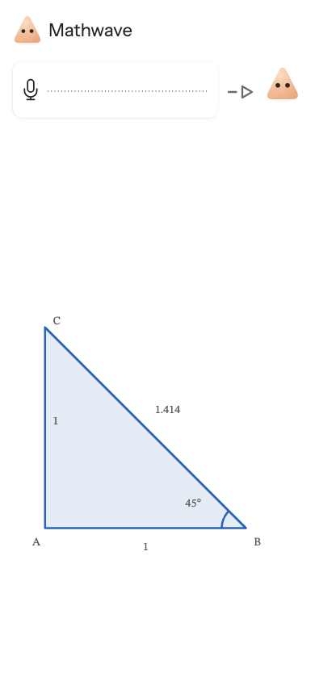
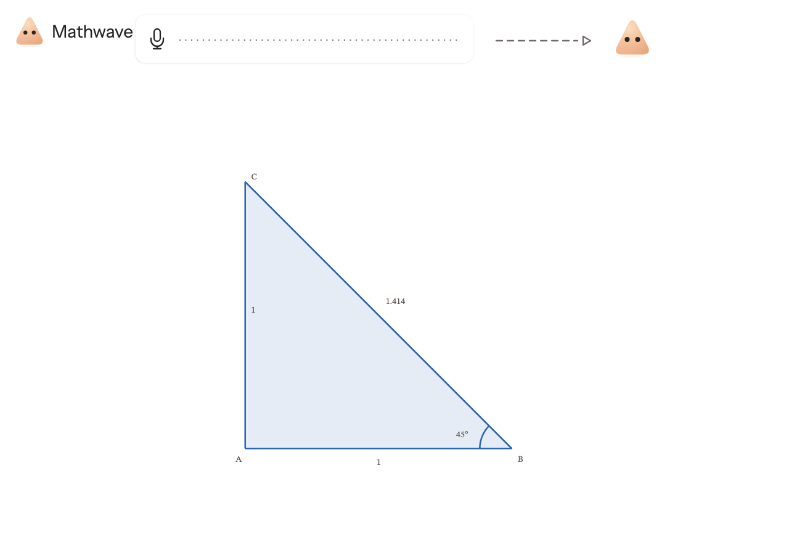

graph-polar-half-circle-domain:2:final
Only draw angles from zero to pi.
Automatic grade: fail. Screenshot source: generated outcome.
Saved workspace or history differs from reference outcome.
Model reply: A: point (0, 0). B: point (1, 0). C: point (0, 1).
Reference reply: Graph row 1: r=2.
Expected math and grading notes
{
"state": {
"mode": "equation",
"expression": "0",
"data": [
0,
0
],
"diagram": [
"Start",
"Finish"
],
"selection": 0,
"graph": true,
"graphScene": {
"rows": [
{
"expression": "r=2",
"domain": {
"min": 0,
"max": 3.141592653589793
}
}
]
}
},
"reasons": [
"Saved workspace or history differs from reference outcome."
]
}


